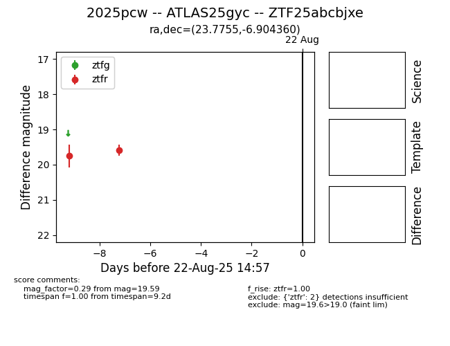

Target 2025pcw at 2025-08-22 17:31, see:
FINK: fink-portal.org/ZTF25abcbjxe
Lasair: lasair-ztf.lsst.ac.uk/objects/ZTF25abcbjxe
ALeRCE: alerce.online/object/ZTF25abcbjxe
TNS: wis-tns.org/object/2025pcw
YSE: ziggy.ucolick.org/yse/transient_detail/2025pcw
alt names
ZTF25abcbjxe (ztf,alerce)
2025pcw (tns,yse)
ATLAS25gyc (atlas)
coordinates:
equatorial (ra, dec) = (23.7755,-6.90436)
galactic (l, b) = (152.0511,-67.27386)
photometry
last ztfr=19.59
2 ztfr detections
